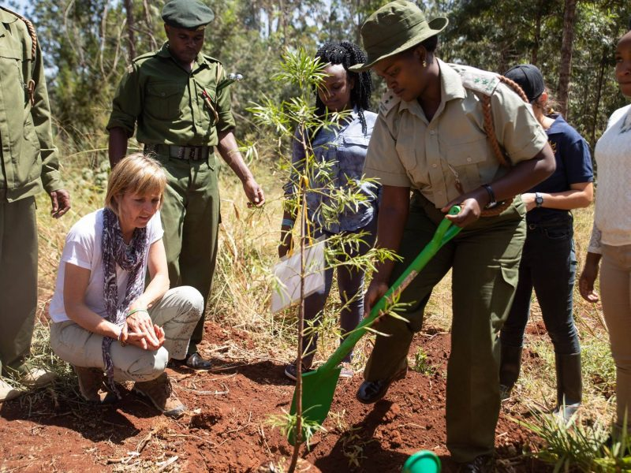

March 12, 2019
Finley’s birthday gift takes root in Kenya—18 trees for 18 years

Today is Finley’s birthday and we’re in Nairobi, Kenya honoring the day with the Green Belt Movement, one of Finley’s first two grantees. Together with the GBM we began the planting of 18 trees for Finley’s 18 years. The trees are in a special space dedicated to Finley called the ‘Hope Space’ in Karura National Forest. We shared Finley’s story and sang happy birthday with a room full of inspirational young Kenyan students fighting to make a difference for the planet. Founded and inspired by Nobel Peace Laureate, Wangari Maathai, the Green Belt Movement encourages all of us to be hummingbirds—encouraging others by just doing what we can. See Wangari Maathai tell the story of the hummingbird by following this link: http://www.greenbeltmovement.org/get-involved/be-a-hummingbird And for ideas on what you can do to make a difference each day, follow our Birthday to Earth Day posts on this blog and on Finley’s Facebook Page https://www.facebook.com/FinleysGreenLeapForward/. A very Happy Birthday to our beautiful hummingbird, Finley.
{kind=link}